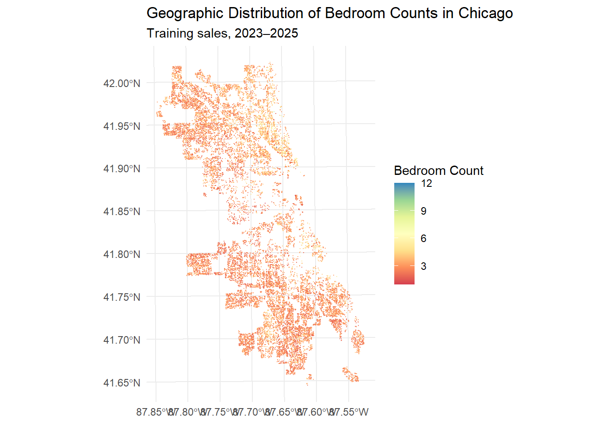
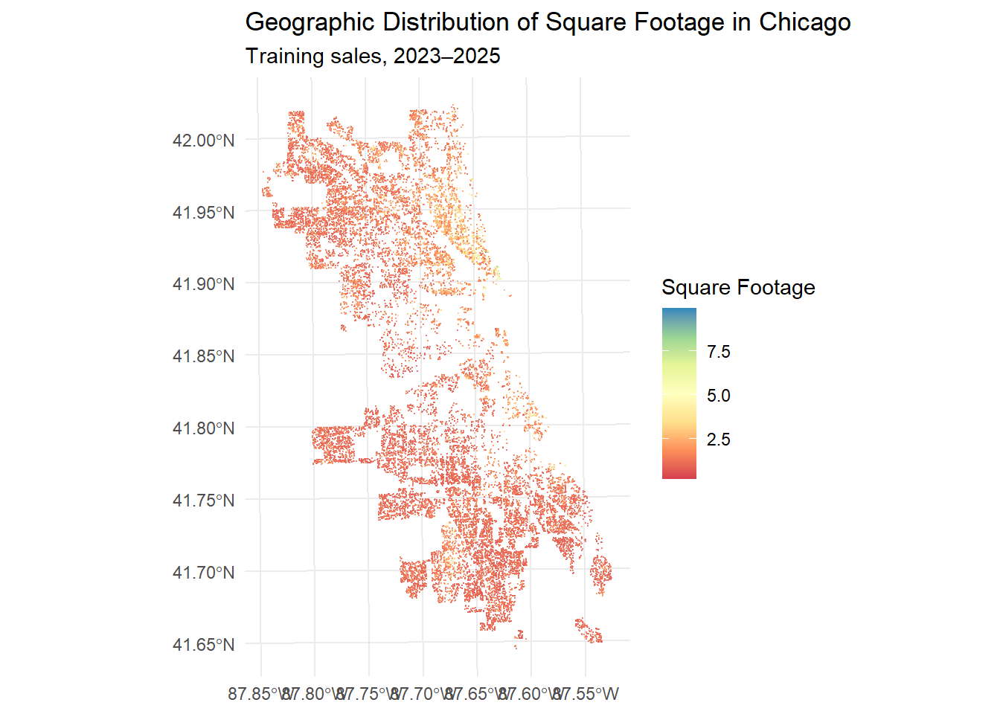

Code
library(tidyverse)
library(tidycensus)
library(sf)
library(caret)
library(spdep)
library(nngeo)
options(scipen = 999)MUSA 5080 · Team assignment
In class we built a house price model for Philadelphia. Now your team does it for a city you haven’t modeled: Chicago.
The Cook County Assessor’s Office has to value every home in the county, including the vast majority that didn’t sell this year. Assessments drive property tax bills. When they’re wrong in a systematic way, some households pay more than their share. A 2017 Chicago Tribune investigation, “The Tax Divide,” found exactly that in Cook County: lower-value homes were assessed at higher shares of their worth than expensive ones.
Build a model that predicts single-family sale prices in Chicago, 2023–2025, using only the tools from this course. The file contains only features of the house itself. Everything about location is yours to build.
| File | What’s in it |
|---|---|
chicago_train.csv |
About 80% of the houses, with sale prices |
chicago_test.csv |
The other 20%, without sale prices. You predict them; we score you. |
The test houses were held out by house, not by sale, so a house that sold twice is entirely on one side. Your CV RMSE is your estimate. Your test RMSE is the truth. If they’re far apart, something leaked.
Due: Friday, October 30. All teammates renders the file on their portfolio and every member submits that link on Canvas. One teammate uploads team_XX_predictions.csv.
Individual accountability: Q7 on October 30 asks each of you about this model: which features you used and why, your CV and test RMSE, and where the model fails worst. Make sure everyone can explain all of it.
You must predict every test house, so fill NAs in a feature rather than filtering.
Open data from 2023–2025 only.
Nothing built from sale prices. Would the Assessor have this number for a house that didn’t sell?
Transform predictors, not sale_price.
No features built from other houses’ sale prices.
| Model log | Every model you tried, in order, with CV RMSE and Moran’s I. Each row has a note saying why you tried it. |
| Features | Incorporate the feature engineering tricks - including the spatial ones covered these past few weeks. |
| Diagnostics | Residual maps for your baseline and final model, and what changed. |
| Error analysis | Where your final model fails worst, and whose homes it over-values (Part 4). |
| Reasoning | Choices justified by evidence from your own analysis. |
These helpers are to help you get off the ground.
library(tidyverse)
library(tidycensus)
library(sf)
library(caret)
library(spdep)
library(nngeo)
options(scipen = 999)check_na <- function(formula, df) {
vars <- all.vars(formula)
bad <- vars[sapply(vars, function(v) any(is.na(df[[v]])))]
if (length(bad) > 0) {
stop("These variables have NAs: ", paste(bad, collapse = ", "),
". Fill them or choose another variable (Rule 1).")
}
}
# 10-fold CV RMSE, same folds every time
cv_rmse <- function(formula, data) {
df <- if (inherits(data, "sf")) st_drop_geometry(data) else data
check_na(formula, df)
set.seed(5080)
fit <- train(formula, data = df, method = "lm",
trControl = trainControl(method = "cv", number = 10))
fit$results$RMSE
}
# Each house's prediction from the fold where it was held out
cv_pred <- function(formula, data) {
df <- if (inherits(data, "sf")) st_drop_geometry(data) else data
check_na(formula, df)
set.seed(5080)
fit <- train(formula, data = df, method = "lm",
trControl = trainControl(method = "cv", number = 10,
savePredictions = "final"))
fit$pred %>% arrange(rowIndex) %>% pull(pred)
}
# Chicago Data Portal (Socrata) -> sf. `where` is a SoQL filter.
socrata_get <- function(dataset, where, select = NULL, limit = 200000) {
where <- str_squish(where)
q <- paste0("$where=", URLencode(where, reserved = TRUE), "&$limit=", limit)
if (!is.null(select)) q <- paste0(q, "&$select=", URLencode(str_squish(select), reserved = TRUE))
url <- paste0("https://data.cityofchicago.org/resource/", dataset, ".geojson?", q)
tmp <- tempfile(fileext = ".geojson")
resp <- tryCatch(download.file(url, tmp, quiet = TRUE), error = function(e) e)
if (inherits(resp, "error")) stop("Portal request failed. Open this URL in a browser to see why:\n", url)
st_read(tmp, quiet = TRUE)
}
moran_cv <- function(formula, train, k = 8) {
model <- lm(formula, data = st_drop_geometry(train))
residuals <- residuals(model)
coords <- st_coordinates(
st_point_on_surface(train)
)
neighbors <- spdep::knearneigh(
coords,
k = k,
longlat = FALSE
)
neighbors_list <- spdep::knn2nb(neighbors)
weights <- spdep::nb2listw(
neighbors_list,
style = "W",
zero.policy = TRUE
)
result <- spdep::moran.test(
residuals,
weights,
zero.policy = TRUE
)
as.numeric(result$estimate[["Moran I statistic"]])
}Build every feature on all_sales, so training and test houses get identical features. Split off train again whenever you add something.
all_sales <- bind_rows(
read_csv("chicago_train.csv", show_col_types = FALSE) %>% mutate(split = "train"),
read_csv("chicago_test.csv", show_col_types = FALSE) %>% mutate(split = "test")
) %>%
st_as_sf(coords = c("lon", "lat"), crs = 4326) %>%
st_transform(3435) # Illinois East State Plane, feet
all_sales %>% st_drop_geometry() %>% count(split)# A tibble: 2 × 2
split n
<chr> <int>
1 test 5789
2 train 23200Useful sources: the Chicago Data Portal (find a dataset’s ID under its API button), the Census via tidycensus, and Cook County’s open data.
Decide which training sales are market sales. Record each rule, why, and how many it removed. Then explore: at least four plots, including a map of price.
#fill na in house features with 0: fireplace = n/a is the same as having 0 fireplaces. This makes the data easier to handle
all_sales <- all_sales |>
mutate(
num_bedrooms = replace_na(num_bedrooms, 0),
num_full_baths = replace_na(num_full_baths, 0),
num_half_baths = replace_na(num_half_baths, 0),
num_fireplaces = replace_na(num_fireplaces, 0),
garage_size = replace_na(garage_size, 0),
central_air = replace_na(central_air, 0),
one_story = replace_na(one_story, 0),
full_basement = replace_na(full_basement, 0),
finished_basement = replace_na(finished_basement, 0),
brick_stone_ext = replace_na(brick_stone_ext, 0),
warmairfurnace = replace_na(warmairfurnace, 0)
)# sales price is equal to or less than 1, likely to be sales that did not go to market
all_sales <- all_sales |>
mutate(
sale_date = as.Date(sale_date, format = "%B %d, %Y")
)# sales date must be between 2023 - 2025: keep within the time frame
train_clean <- all_sales |>
filter(
split == "train",
!is.na(sale_price),
sale_price > 1,
!is.na(sale_date),
between(
sale_date,
as.Date("2023-01-01"),
as.Date("2025-12-31")
)
)# Keep test rows
test_clean <- all_sales |>
filter(split == "test")
# Recombine
all_sales <- bind_rows(train_clean, test_clean)
# Check the number of rows in each split
all_sales |> count(split)Simple feature collection with 2 features and 2 fields
Geometry type: MULTIPOINT
Dimension: XY
Bounding box: xmin: 1116740 ymin: 1814027 xmax: 1205030 ymax: 1951538
Projected CRS: NAD83 / Illinois East (ftUS)
# A tibble: 2 × 3
split n geometry
* <chr> <int> <MULTIPOINT [US_survey_foot]>
1 test 5789 ((1116904 1930122), (1117214 1929140), (1117295 1928971), (111775…
2 train 23200 ((1116740 1929929), (1116903 1930219), (1116904 1929984), (111690…# Keep training sales with valid sale prices and coordinates
map_sales <- all_sales |>
filter(
split == "train",
!is.na(sale_price),
sale_price > 0,
!is.na(geometry)
) |>
st_as_sf()
# Map sale prices
ggplot(map_sales) +
geom_sf(aes(color = sale_price), size = 0.1, alpha = 0.7) +
scale_color_distiller(
palette = "Spectral",
direction = 1,
trans = "log10",
labels = scales::label_dollar(),
name = "Sale Price"
) +
labs(
title = "Geographic Distribution of Chicago House Sale Prices",
subtitle = "Training sales, 2023–2025"
) +
theme_minimal()
ggplot(map_sales) +
geom_sf(aes(color = building_age), size = 0.1, alpha = 0.7) +
scale_color_distiller(
palette = "Spectral",
direction = 1,
labels = scales::label_number(suffix = " years"),
name = "Building Age"
) +
labs(
title = "Geographic Distribution of Building Age in Chicago",
subtitle = "Training sales, 2023–2025"
) +
theme_minimal()
ggplot(map_sales) +
geom_sf(aes(color = num_bedrooms), size = 0.1, alpha = 0.7) +
scale_color_distiller(
palette = "Spectral",
direction = 1,
name = "Bedroom Count"
) +
labs(
title = "Geographic Distribution of Bedroom Counts in Chicago",
subtitle = "Training sales, 2023–2025"
) +
theme_minimal()
ggplot(map_sales) +
geom_sf(aes(color = building_000sf), size = 0.1, alpha = 0.7) +
scale_color_distiller(
palette = "Spectral",
direction = 1,
name = "Square Footage"
) +
labs(
title = "Geographic Distribution of Square Footage in Chicago",
subtitle = "Training sales, 2023–2025"
) +
theme_minimal()
Answer: What in your exploration shaped your modeling choices?
Your answer: Building age appears to be strongly associated with price so we might look at historic district outlines. Both bedroom count and square footage apprear to be skewed by high outliers. We also can see that north of 41°N houses the most expensive neighborhoods and south of that we see the cheapest neighborhoods. This makes us want to inquiry about the neighborhoods themselves and maybe add in historical redlining districts.
Start with a structure-only baseline. Then add features in steps you can learn from, logging each one. Keep the log in a tibble with columns model, added, cv_rmse, moran_i, notes.
# 1. Download ACS 2019–2023 5-year estimates
acs_tracts <- tidycensus::get_acs(
geography = "tract",
variables = c(
median_income = "B19013_001",
median_age = "B01002_001",
total_population = "B01003_001",
median_gross_rent = "B25064_001",
median_home_value = "B25077_001",
owner_occupied = "B25003_002",
renter_occupied = "B25003_003",
bachelors_or_higher = "B15003_022",
unemployed = "B23025_005",
labor_force = "B23025_003",
vacant = "B25002_003",
median_realestate_taxes = "B25103_001",
below_poverty = "B17001_002",
valued_millionPLS = "B25075_001",
work_from_home = "B08301_021"
),
state = "IL",
county = "Cook",
year = 2023,
output = "wide",
geometry = TRUE
) |>
transmute(
GEOID,
median_income = median_incomeE,
median_age = median_ageE,
total_population = total_populationE,
median_gross_rent = median_gross_rentE,
median_home_value = median_home_valueE,
owner_occupied = owner_occupiedE,
renter_occupied = renter_occupiedE,
bachelors_or_higher = bachelors_or_higherE,
vacant = vacantE,
median_realestate_taxes = median_realestate_taxesE,
below_poverty = below_povertyE,
valued_millionPLS = valued_millionPLSE,
work_from_home = work_from_homeE,
unemployment_rate = ifelse(
labor_forceE > 0,
100 * unemployedE / labor_forceE,
NA_real_
),
geometry
) |>
sf::st_transform(3435)
|
| | 0%
|
|= | 1%
|
|== | 3%
|
|=== | 4%
|
|==== | 5%
|
|===== | 7%
|
|====== | 9%
|
|======= | 10%
|
|======== | 11%
|
|======== | 12%
|
|========== | 14%
|
|=========== | 16%
|
|============ | 17%
|
|============ | 18%
|
|============= | 19%
|
|============== | 20%
|
|=============== | 21%
|
|================ | 22%
|
|================ | 23%
|
|================= | 24%
|
|================== | 26%
|
|=================== | 27%
|
|==================== | 29%
|
|===================== | 30%
|
|===================== | 31%
|
|====================== | 32%
|
|======================= | 33%
|
|======================== | 34%
|
|========================= | 35%
|
|========================= | 36%
|
|========================== | 37%
|
|=========================== | 38%
|
|============================ | 39%
|
|============================ | 41%
|
|============================= | 42%
|
|============================== | 43%
|
|=============================== | 44%
|
|=============================== | 45%
|
|================================ | 46%
|
|================================= | 47%
|
|================================== | 48%
|
|=================================== | 49%
|
|=================================== | 50%
|
|==================================== | 52%
|
|===================================== | 53%
|
|====================================== | 54%
|
|====================================== | 55%
|
|======================================= | 56%
|
|======================================== | 57%
|
|========================================= | 58%
|
|========================================= | 59%
|
|========================================== | 60%
|
|=========================================== | 61%
|
|============================================ | 63%
|
|============================================= | 64%
|
|============================================= | 65%
|
|============================================== | 66%
|
|=============================================== | 67%
|
|================================================ | 68%
|
|================================================ | 69%
|
|================================================= | 70%
|
|================================================== | 71%
|
|=================================================== | 72%
|
|=================================================== | 73%
|
|=================================================== | 74%
|
|==================================================== | 75%
|
|===================================================== | 76%
|
|====================================================== | 77%
|
|======================================================= | 78%
|
|======================================================= | 79%
|
|======================================================== | 80%
|
|========================================================= | 81%
|
|========================================================== | 83%
|
|=========================================================== | 84%
|
|=========================================================== | 85%
|
|============================================================ | 86%
|
|============================================================= | 87%
|
|============================================================== | 88%
|
|============================================================== | 89%
|
|=============================================================== | 90%
|
|================================================================ | 91%
|
|================================================================= | 92%
|
|================================================================= | 93%
|
|================================================================== | 95%
|
|=================================================================== | 96%
|
|===================================================================== | 98%
|
|===================================================================== | 99%
|
|======================================================================| 100%# Check ACS download
print(nrow(acs_tracts))[1] 1332# Define ACS predictor names
acs_vars <- c(
"median_income",
"median_age",
"total_population",
"median_gross_rent",
"median_home_value",
"owner_occupied",
"renter_occupied",
"bachelors_or_higher",
"unemployment_rate",
"vacant",
"median_realestate_taxes",
"below_poverty",
"valued_millionPLS",
"work_from_home"
)
# 3. Start from sales data and remove old ACS columns
all_sales <- all_sales |>
select(
-any_of(acs_vars),
-matches(
paste0(
"^(",
paste(acs_vars, collapse = "|"),
")\\.(x|y)(\\.\\.\\.[0-9]+)?$"
)
)
)
# Join ACS attributes to properties by location
all_sales <- sf::st_join(
all_sales,
acs_tracts |>
select(all_of(acs_vars)),
join = sf::st_within,
left = TRUE
)
# Fill missing ACS values using training-set medians
for (v in acs_vars) {
train_values <- all_sales[[v]][
all_sales$split == "train" &
!is.na(all_sales[[v]])
]
# Stop if a variable has no usable training values
if (length(train_values) == 0) {
warning(
paste("No non-missing training values for", v)
)
next
}
fill_value <- median(train_values, na.rm = TRUE)
all_sales[[v]][is.na(all_sales[[v]])] <- fill_value
}
print(colSums(is.na(all_sales[, acs_vars]))) median_income median_age total_population
0 0 0
median_gross_rent median_home_value owner_occupied
0 0 0
renter_occupied bachelors_or_higher unemployment_rate
0 0 0
vacant median_realestate_taxes below_poverty
0 0 0
valued_millionPLS work_from_home geometry
0 0 0 train <- all_sales |>
filter(split == "train")##PARKS DATA
# Read the parks CSV
parks_raw <- readr::read_csv(
"data/CPD_Parks_20261019.csv",
show_col_types = FALSE,
col_types = readr::cols(
the_geom = readr::col_character(),
.default = readr::col_guess()
)
)
# Convert the WKT geometry column into an sf object
parks <- sf::st_as_sf(
parks_raw,
wkt = "the_geom",
crs = 4326
)
# Keep useful fields and preserve the geometry
parks <- parks |>
dplyr::select(
PARK,
ACRES,
geometry = dplyr::all_of(attr(sf::st_geometry(parks), "sf_column"))
) |>
dplyr::mutate(
park_acres = readr::parse_number(as.character(ACRES))
) |>
dplyr::select(
park_name = PARK,
park_acres
) |>
sf::st_transform(3435)
# Transform house locations to the same projected CRS
all_sales <- sf::st_transform(all_sales, 3435)
# Find the nearest park to each house
nearest_park <- sf::st_nearest_feature(
all_sales,
parks
)
all_sales$park_distance_m <- as.numeric(
sf::st_distance(
all_sales,
parks[nearest_park, ],
by_element = TRUE
)
)
# Find parks within 500 meters of each house (can be changed)
nearby_parks <- sf::st_is_within_distance(
all_sales,
parks,
dist = 500. #TO BE DISCUSSED
)
# Count nearby parks
all_sales$nearby_park_count_500m <- lengths(nearby_parks)
# Sum the acreage of parks within 500 meters
all_sales$nearby_park_acres_500m <- vapply(
nearby_parks,
function(i) {
sum(parks$park_acres[i], na.rm = TRUE)
},
numeric(1)
)
summary(
sf::st_drop_geometry(all_sales)[
c(
"park_distance_m",
"nearby_park_count_500m",
"nearby_park_acres_500m"
)
]
) park_distance_m nearby_park_count_500m nearby_park_acres_500m
Min. : 12.49 Min. :0.0000 Min. : 0.000
1st Qu.: 602.31 1st Qu.:0.0000 1st Qu.: 0.000
Median :1084.95 Median :0.0000 Median : 0.000
Mean :1212.31 Mean :0.2103 Mean : 5.335
3rd Qu.:1690.41 3rd Qu.:0.0000 3rd Qu.: 0.000
Max. :6878.48 Max. :3.0000 Max. :1222.760 train <- all_sales |>
filter(split == "train")# Read the CTA rail station shapefile
cta_stations <- sf::st_read(
"data/CTA_RailStations/CTA_RailStations.shp",
quiet = TRUE
)
print(nrow(cta_stations))[1] 144names(cta_stations)[1] "STATION_ID" "LONGNAME" "LINES" "ADDRESS" "ADA"
[6] "PKNRD" "POINT_X" "POINT_Y" "geometry" sf::st_crs(cta_stations)Coordinate Reference System:
User input: NAD83 / Illinois East (ftUS)
wkt:
PROJCRS["NAD83 / Illinois East (ftUS)",
BASEGEOGCRS["NAD83",
DATUM["North American Datum 1983",
ELLIPSOID["GRS 1980",6378137,298.257222101,
LENGTHUNIT["metre",1]]],
PRIMEM["Greenwich",0,
ANGLEUNIT["degree",0.0174532925199433]],
ID["EPSG",4269]],
CONVERSION["SPCS83 Illinois East zone (US survey foot)",
METHOD["Transverse Mercator",
ID["EPSG",9807]],
PARAMETER["Latitude of natural origin",36.6666666666667,
ANGLEUNIT["degree",0.0174532925199433],
ID["EPSG",8801]],
PARAMETER["Longitude of natural origin",-88.3333333333333,
ANGLEUNIT["degree",0.0174532925199433],
ID["EPSG",8802]],
PARAMETER["Scale factor at natural origin",0.999975,
SCALEUNIT["unity",1],
ID["EPSG",8805]],
PARAMETER["False easting",984250,
LENGTHUNIT["US survey foot",0.304800609601219],
ID["EPSG",8806]],
PARAMETER["False northing",0,
LENGTHUNIT["US survey foot",0.304800609601219],
ID["EPSG",8807]]],
CS[Cartesian,2],
AXIS["easting (X)",east,
ORDER[1],
LENGTHUNIT["US survey foot",0.304800609601219]],
AXIS["northing (Y)",north,
ORDER[2],
LENGTHUNIT["US survey foot",0.304800609601219]],
USAGE[
SCOPE["Engineering survey, topographic mapping."],
AREA["United States (USA) - Illinois - counties of Boone; Champaign; Clark; Clay; Coles; Cook; Crawford; Cumberland; De Kalb; De Witt; Douglas; Du Page; Edgar; Edwards; Effingham; Fayette; Ford; Franklin; Gallatin; Grundy; Hamilton; Hardin; Iroquois; Jasper; Jefferson; Johnson; Kane; Kankakee; Kendall; La Salle; Lake; Lawrence; Livingston; Macon; Marion; Massac; McHenry; McLean; Moultrie; Piatt; Pope; Richland; Saline; Shelby; Vermilion; Wabash; Wayne; White; Will; Williamson."],
BBOX[37.06,-89.27,42.5,-87.02]],
ID["EPSG",3435]]# Make sure both datasets use the same projected CRS
cta_stations <- sf::st_transform(cta_stations, 3435)
all_sales <- sf::st_transform(all_sales, 3435)
# Distance to nearest CTA rail station
nearest_station <- sf::st_nearest_feature(
all_sales,
cta_stations
)
all_sales$cta_distance_m <- as.numeric(
sf::st_distance(
all_sales,
cta_stations[nearest_station, ],
by_element = TRUE
)
) * 0.3048
# Count CTA stations within 800 meters (can change this)
nearby_stations <- sf::st_is_within_distance(
all_sales,
cta_stations,
dist = 800 / 0.3048, ###TO BE DECIDED ON
)
all_sales$cta_stations_800m <- lengths(nearby_stations)
summary(all_sales$cta_distance_m) Min. 1st Qu. Median Mean 3rd Qu. Max.
36.72 967.88 2035.91 2548.22 3771.90 11039.48 summary(all_sales$cta_stations_800m) Min. 1st Qu. Median Mean 3rd Qu. Max.
0.0000 0.0000 0.0000 0.2858 0.0000 4.0000 train <- all_sales |>
filter(split == "train")# Read the metra rail station shapefile
metra_stations <- sf::st_read(
"data/Metra_Stations/MetraStations.shp",
quiet = TRUE
)
print(nrow(metra_stations))[1] 247names(metra_stations) [1] "OBJECTID" "STATION_ID" "ASSET_ID" "NAME" "LONGNAME"
[6] "LINES" "BRANCH_ID" "STATUS" "MILEPOST" "FAREZONE"
[11] "ADA" "ADA2" "PKNRD" "BIKEPKNG" "TICKET_AVA"
[16] "ADDRESS" "MUNICIPALI" "TELEPHONE" "WEBLINK" "LABELANGLE"
[21] "EDIT_INIT" "EDIT_DATE" "YEAR_OPEN" "geometry" sf::st_crs(metra_stations)Coordinate Reference System:
User input: NAD83 / Illinois East (ftUS)
wkt:
PROJCRS["NAD83 / Illinois East (ftUS)",
BASEGEOGCRS["NAD83",
DATUM["North American Datum 1983",
ELLIPSOID["GRS 1980",6378137,298.257222101,
LENGTHUNIT["metre",1]]],
PRIMEM["Greenwich",0,
ANGLEUNIT["degree",0.0174532925199433]],
ID["EPSG",4269]],
CONVERSION["SPCS83 Illinois East zone (US survey foot)",
METHOD["Transverse Mercator",
ID["EPSG",9807]],
PARAMETER["Latitude of natural origin",36.6666666666667,
ANGLEUNIT["degree",0.0174532925199433],
ID["EPSG",8801]],
PARAMETER["Longitude of natural origin",-88.3333333333333,
ANGLEUNIT["degree",0.0174532925199433],
ID["EPSG",8802]],
PARAMETER["Scale factor at natural origin",0.999975,
SCALEUNIT["unity",1],
ID["EPSG",8805]],
PARAMETER["False easting",984250,
LENGTHUNIT["US survey foot",0.304800609601219],
ID["EPSG",8806]],
PARAMETER["False northing",0,
LENGTHUNIT["US survey foot",0.304800609601219],
ID["EPSG",8807]]],
CS[Cartesian,2],
AXIS["easting (X)",east,
ORDER[1],
LENGTHUNIT["US survey foot",0.304800609601219]],
AXIS["northing (Y)",north,
ORDER[2],
LENGTHUNIT["US survey foot",0.304800609601219]],
USAGE[
SCOPE["Engineering survey, topographic mapping."],
AREA["United States (USA) - Illinois - counties of Boone; Champaign; Clark; Clay; Coles; Cook; Crawford; Cumberland; De Kalb; De Witt; Douglas; Du Page; Edgar; Edwards; Effingham; Fayette; Ford; Franklin; Gallatin; Grundy; Hamilton; Hardin; Iroquois; Jasper; Jefferson; Johnson; Kane; Kankakee; Kendall; La Salle; Lake; Lawrence; Livingston; Macon; Marion; Massac; McHenry; McLean; Moultrie; Piatt; Pope; Richland; Saline; Shelby; Vermilion; Wabash; Wayne; White; Will; Williamson."],
BBOX[37.06,-89.27,42.5,-87.02]],
ID["EPSG",3435]]# Make sure both datasets use the same projected CRS
metra_stations <- sf::st_transform(metra_stations, 3435)
all_sales <- sf::st_transform(all_sales, 3435)
# Distance to nearest metra rail station
nearest_station <- sf::st_nearest_feature(
all_sales,
metra_stations
)
all_sales$metra_distance_m <- as.numeric(
sf::st_distance(
all_sales,
metra_stations[nearest_station, ],
by_element = TRUE
)
) * 0.3048
# Count metra stations within 800 meters (can change this)
nearby_stations <- sf::st_is_within_distance(
all_sales,
metra_stations,
dist = 800 / 0.3048, ###TO BE DECIDED ON
)
all_sales$metra_stations_800m <- lengths(nearby_stations)
summary(all_sales$metra_distance_m) Min. 1st Qu. Median Mean 3rd Qu. Max.
28.41 922.18 1593.98 1806.44 2412.24 5845.24 summary(all_sales$metra_stations_800m) Min. 1st Qu. Median Mean 3rd Qu. Max.
0.0000 0.0000 0.0000 0.2661 0.0000 3.0000 train <- all_sales |>
filter(split == "train")school_locations <- readr::read_csv(
"data/Chicago_Public_Schools_-_School_Locations_SY2324_20261019.csv",
show_col_types = FALSE
)
school_reports <- readr::read_csv(
"data/Chicago_Public_Schools_-_School_Progress_Reports_SY2425_20261019.csv",
show_col_types = FALSE
)
school_locations <- school_locations |>
mutate(School_ID = as.character(School_ID))
school_reports <- school_reports |>
mutate(School_ID = as.character(School_ID))
# Keep the most recent report for each school
school_reports_latest <- school_reports |>
filter(!is.na(Progress_Report_Year)) |>
group_by(School_ID) |>
slice_max(
order_by = Progress_Report_Year,
n = 1,
with_ties = FALSE
) |>
ungroup()
# Join school reports to school locations (by school ID #)
schools <- school_locations |>
left_join(
school_reports_latest |>
select(
School_ID,
Student_Growth_Rating,
Student_Attainment_Rating,
Culture_Climate_Rating,
Student_Attendance_Avg_Pct,
Graduation_4_Year_School_Pct_Year_2
),
by = "School_ID"
)
nrow(schools)[1] 649names(schools) [1] "the_geom" "School_ID"
[3] "Short_Name" "Address"
[5] "Grade_Cat" "Lat"
[7] "Long" "Student_Growth_Rating"
[9] "Student_Attainment_Rating" "Culture_Climate_Rating"
[11] "Student_Attendance_Avg_Pct" "Graduation_4_Year_School_Pct_Year_2"#Converting to spatial data
schools <- schools |>
filter(
!is.na(Lat),
!is.na(Long)
) |>
sf::st_as_sf(
coords = c("Long", "Lat"),
crs = 4326,
remove = FALSE
) |>
sf::st_transform(3435)
all_sales <- sf::st_transform(all_sales, 3435)
#Calculate nearby schools (nearest feature rating)
nearest_school <- sf::st_nearest_feature(
all_sales,
schools
)
all_sales$school_distance_m <- as.numeric(
sf::st_distance(
all_sales,
schools[nearest_school, ],
by_element = TRUE
)
) * 0.3048
summary(all_sales$school_distance_m) Min. 1st Qu. Median Mean 3rd Qu. Max.
22.78 268.87 401.18 432.34 562.37 1946.87 # Convert unavailable attendance values to NA
schools <- schools |>
mutate(
Student_Attendance_Avg_Pct = as.numeric(
Student_Attendance_Avg_Pct
),
Student_Attendance_Avg_Pct = if_else(
Student_Attendance_Avg_Pct < 0 |
Student_Attendance_Avg_Pct > 100,
NA_real_,
Student_Attendance_Avg_Pct
)
)
nearby_schools <- sf::st_is_within_distance(
all_sales,
schools,
dist = 1600 / 0.3048
)
#Count of shcools within 1600M (CAN BE CHANGED)
all_sales$nearby_school_count_1600m <- lengths(
nearby_schools
)
all_sales$nearby_school_attendance_1600m <- vapply(
nearby_schools,
function(i) {
values <- schools$Student_Attendance_Avg_Pct[i]
if (length(values) == 0 || all(is.na(values))) {
return(NA_real_)
}
mean(values, na.rm = TRUE)
},
numeric(1)
)
#fill missing values with training data
train_rows <- all_sales$split == "train"
attendance_median <- median(
all_sales$nearby_school_attendance_1600m[train_rows],
na.rm = TRUE
)
all_sales$nearby_school_attendance_1600m[
is.na(all_sales$nearby_school_attendance_1600m)
] <- attendance_median
train <- all_sales |>
filter(split == "train")landmarks <- sf::st_read(
"data/LandmarkDistricts_nov2012/LandmarkDistricts_nov2012.shp",
quiet = TRUE
)
nrow(landmarks)[1] 59names(landmarks)[1] "NUMBER_" "NAME" "DATE_" "REGISTER" "geometry"sf::st_geometry_type(landmarks) [1] MULTIPOLYGON MULTIPOLYGON MULTIPOLYGON MULTIPOLYGON MULTIPOLYGON
[6] MULTIPOLYGON MULTIPOLYGON MULTIPOLYGON MULTIPOLYGON MULTIPOLYGON
[11] MULTIPOLYGON MULTIPOLYGON MULTIPOLYGON MULTIPOLYGON MULTIPOLYGON
[16] MULTIPOLYGON MULTIPOLYGON MULTIPOLYGON MULTIPOLYGON MULTIPOLYGON
[21] MULTIPOLYGON MULTIPOLYGON MULTIPOLYGON MULTIPOLYGON MULTIPOLYGON
[26] MULTIPOLYGON MULTIPOLYGON MULTIPOLYGON MULTIPOLYGON MULTIPOLYGON
[31] MULTIPOLYGON MULTIPOLYGON MULTIPOLYGON MULTIPOLYGON MULTIPOLYGON
[36] MULTIPOLYGON MULTIPOLYGON MULTIPOLYGON MULTIPOLYGON MULTIPOLYGON
[41] MULTIPOLYGON MULTIPOLYGON MULTIPOLYGON MULTIPOLYGON MULTIPOLYGON
[46] MULTIPOLYGON MULTIPOLYGON MULTIPOLYGON MULTIPOLYGON MULTIPOLYGON
[51] MULTIPOLYGON MULTIPOLYGON MULTIPOLYGON MULTIPOLYGON MULTIPOLYGON
[56] MULTIPOLYGON MULTIPOLYGON MULTIPOLYGON MULTIPOLYGON
18 Levels: GEOMETRY POINT LINESTRING POLYGON MULTIPOINT ... TRIANGLEsf::st_crs(landmarks)Coordinate Reference System:
User input: NAD83 / Illinois East (ftUS)
wkt:
PROJCRS["NAD83 / Illinois East (ftUS)",
BASEGEOGCRS["NAD83",
DATUM["North American Datum 1983",
ELLIPSOID["GRS 1980",6378137,298.257222101,
LENGTHUNIT["metre",1]]],
PRIMEM["Greenwich",0,
ANGLEUNIT["degree",0.0174532925199433]],
ID["EPSG",4269]],
CONVERSION["SPCS83 Illinois East zone (US survey foot)",
METHOD["Transverse Mercator",
ID["EPSG",9807]],
PARAMETER["Latitude of natural origin",36.6666666666667,
ANGLEUNIT["degree",0.0174532925199433],
ID["EPSG",8801]],
PARAMETER["Longitude of natural origin",-88.3333333333333,
ANGLEUNIT["degree",0.0174532925199433],
ID["EPSG",8802]],
PARAMETER["Scale factor at natural origin",0.999975,
SCALEUNIT["unity",1],
ID["EPSG",8805]],
PARAMETER["False easting",984250,
LENGTHUNIT["US survey foot",0.304800609601219],
ID["EPSG",8806]],
PARAMETER["False northing",0,
LENGTHUNIT["US survey foot",0.304800609601219],
ID["EPSG",8807]]],
CS[Cartesian,2],
AXIS["easting (X)",east,
ORDER[1],
LENGTHUNIT["US survey foot",0.304800609601219]],
AXIS["northing (Y)",north,
ORDER[2],
LENGTHUNIT["US survey foot",0.304800609601219]],
USAGE[
SCOPE["Engineering survey, topographic mapping."],
AREA["United States (USA) - Illinois - counties of Boone; Champaign; Clark; Clay; Coles; Cook; Crawford; Cumberland; De Kalb; De Witt; Douglas; Du Page; Edgar; Edwards; Effingham; Fayette; Ford; Franklin; Gallatin; Grundy; Hamilton; Hardin; Iroquois; Jasper; Jefferson; Johnson; Kane; Kankakee; Kendall; La Salle; Lake; Lawrence; Livingston; Macon; Marion; Massac; McHenry; McLean; Moultrie; Piatt; Pope; Richland; Saline; Shelby; Vermilion; Wabash; Wayne; White; Will; Williamson."],
BBOX[37.06,-89.27,42.5,-87.02]],
ID["EPSG",3435]]landmarks <- sf::st_transform(landmarks, 3435)
all_sales <- sf::st_transform(all_sales, 3435)
# whether each house intersects a landmark district
inside_landmark <- lengths(
sf::st_intersects(all_sales, landmarks)
) > 0
all_sales$in_landmark_district <- as.integer(
inside_landmark
)
nearest_landmark <- sf::st_nearest_feature(
all_sales,
landmarks
)
all_sales$landmark_distance_m <- as.numeric(
sf::st_distance(
all_sales,
landmarks[nearest_landmark, ],
by_element = TRUE
)
) * 0.3048
train <- all_sales |>
filter(split == "train")redlining <- sf::st_read(
"data/mappinginequality.gpkg",
quiet = TRUE
)
names(redlining) [1] "area_id" "city" "state" "city_survey" "category"
[6] "grade" "label" "residential" "commercial" "industrial"
[11] "fill" "geom" sf::st_crs(redlining)Coordinate Reference System:
User input: WGS 84
wkt:
GEOGCRS["WGS 84",
ENSEMBLE["World Geodetic System 1984 ensemble",
MEMBER["World Geodetic System 1984 (Transit)"],
MEMBER["World Geodetic System 1984 (G730)"],
MEMBER["World Geodetic System 1984 (G873)"],
MEMBER["World Geodetic System 1984 (G1150)"],
MEMBER["World Geodetic System 1984 (G1674)"],
MEMBER["World Geodetic System 1984 (G1762)"],
MEMBER["World Geodetic System 1984 (G2139)"],
MEMBER["World Geodetic System 1984 (G2296)"],
ELLIPSOID["WGS 84",6378137,298.257223563,
LENGTHUNIT["metre",1]],
ENSEMBLEACCURACY[2.0]],
PRIMEM["Greenwich",0,
ANGLEUNIT["degree",0.0174532925199433]],
CS[ellipsoidal,2],
AXIS["geodetic latitude (Lat)",north,
ORDER[1],
ANGLEUNIT["degree",0.0174532925199433]],
AXIS["geodetic longitude (Lon)",east,
ORDER[2],
ANGLEUNIT["degree",0.0174532925199433]],
USAGE[
SCOPE["Horizontal component of 3D system."],
AREA["World."],
BBOX[-90,-180,90,180]],
ID["EPSG",4326]]sf::st_bbox(redlining) xmin ymin xmax ymax
-122.76751 25.70537 -69.60044 48.24730 sort(table(redlining$grade_field, useNA = "ifany"),
decreasing = TRUE)integer(0)chicago_redlining <- redlining |>
dplyr::filter(
stringr::str_detect(
stringr::str_to_lower(city),
"chicago"
),
stringr::str_to_upper(state) %in% c("IL", "ILLINOIS")
)
nrow(chicago_redlining)[1] 703table(chicago_redlining$grade, useNA = "ifany")
A A B C C D <NA>
48 1 160 326 1 147 20 chicago_redlining <- sf::st_transform(chicago_redlining, 3435)
all_sales <- sf::st_transform(all_sales, 3435)
# which HOLC polygons each house intersects
holc_matches <- sf::st_intersects(all_sales, chicago_redlining)
# Assign the grade
all_sales$holc_grade <- vapply(
holc_matches,
function(i) {
if (length(i) == 0) {
return("Outside mapped area")
}
grades <- unique(
na.omit(chicago_redlining$grade[i])
)
if (length(grades) == 0) {
return("Unknown")
}
if (length(grades) > 1) {
return("Multiple grades")
}
as.character(grades[1])
},
character(1)
)
all_sales$holc_grade <- factor(all_sales$holc_grade)
table(all_sales$holc_grade, useNA = "ifany")
A B C D
365 3345 13502 7166
Outside mapped area Unknown
3821 790 train <- all_sales |>
filter(split == "train")postsecondary <- st_read(
"data/EDGE_GEOCODE_POSTSECONDARYSCH_2324.geojson"
)Reading layer `EDGE_GEOCODE_POSTSECONDARYSCH_2324' from data source
`C:\MUSA\public policy analysis\PPAAssignment5\data\EDGE_GEOCODE_POSTSECONDARYSCH_2324.geojson'
using driver `GeoJSON'
Simple feature collection with 6731 features and 22 fields
Geometry type: POINT
Dimension: XY
Bounding box: xmin: -170.7428 ymin: -14.32264 xmax: 171.3781 ymax: 71.3247
Geodetic CRS: WGS 84postsecondary <- postsecondary |>
st_transform(st_crs(all_sales))
# postsecondary institutions in Illinois
illinois_postsecondary <- postsecondary |>
filter(STATE == "IL")
# Make sure both datasets use a projected CRS in meters
sales_points_m <- st_transform(
st_point_on_surface(all_sales), 26916
)
schools_m <- st_transform(
illinois_postsecondary, 26916
)
# Distance to nearest postsecondary institution
nearest_school <- st_nearest_feature(
sales_points_m, schools_m
)
all_sales$university_distance_m <- as.numeric(
st_distance(
sales_points_m,
schools_m[nearest_school, ],
by_element = TRUE
)
)
# Number of institutions within 1,600 meters
nearby_universities <- st_is_within_distance(
sales_points_m,
schools_m,
dist = 1600
)
all_sales$universities_1600m <- lengths(nearby_universities)
train <- all_sales |>
filter(split == "train")# Cleaned training data
train <- all_sales |>
filter(split == "train")
# Create projected coordinates for spatial analysis
coords <- sf::st_coordinates(train)
train <- train |>
mutate(
x_coord = coords[, 1],
y_coord = coords[, 2]
)
# Set up model log
model_log <- tibble(
model = character(),
added = character(),
cv_rmse = double(),
# moran_i = double(),
notes = character()
)
# Function to log each model
log_model <- function(name, formula, added, notes) {
tibble(
model = name,
added = added,
cv_rmse = cv_rmse(formula, train),
# moran_i = moran_cv(formula, train),
notes = notes
)
}
#M00: baseline: square footage
f00 <- sale_price ~ building_000sf
model_log <- bind_rows(
model_log,
log_model(
"M00: building_000sf",
f00,
"square footage",
" square footage."
)
)
# M01: Add building age
f01 <- update(f00, . ~ . + building_age)
model_log <- bind_rows(
model_log,
log_model(
"M01: Add building age",
f01,
"Building age",
"Tests whether building age improves prediction."
)
)
# M2: Add number of bedrooms
f02 <- update(f01, . ~ . + num_bedrooms)
model_log <- bind_rows(
model_log,
log_model(
"M02: Add number of bedrooms",
f02,
"Number of bedrooms",
"Tests whether number of bedrooms improves prediction."
)
)
# M03: Add number of full baths
f03 <- update(f02, . ~ . + num_full_baths)
model_log <- bind_rows(
model_log,
log_model(
"M03: Add number of full baths",
f03,
"Number of full baths",
"Tests whether number of full baths improves prediction."
)
)
# M04: Add central air
f04 <- update(f03, . ~ . + central_air)
model_log <- bind_rows(
model_log,
log_model(
"M04: Add central air",
f04,
"Central air",
"Tests whether central air improves prediction."
)
)
# M05: Add warm air furnace
f05 <- update(f04, . ~ . + warmairfurnace)
model_log <- bind_rows(
model_log,
log_model(
"M05: Add warm air furnace",
f05,
"Warm air furnace",
"Tests whether warm air furnace improves prediction."
)
)
# M06: Add one-story indicator
f06 <- update(f05, . ~ . + one_story)
model_log <- bind_rows(
model_log,
log_model(
"M06: Add one-story indicator",
f06,
"One-story indicator",
"Tests whether a one-story property indicator improves prediction."
)
)# M07: Neighborhood income
f07 <- update(f06, . ~ . + median_income)
model_log <- bind_rows(
model_log,
log_model(
"M07: Neighborhood income",
f07,
"Median household income",
"Tests whether neighborhood income improves price prediction."
)
)
# M08: Add median age
f08 <- update(f07, . ~ . + median_age)
model_log <- bind_rows(
model_log,
log_model(
"M08: Add median age",
f08,
"Median household income + median age",
"Tests whether neighborhood age patterns improve prediction."
)
)
# M9: Add population
f09 <- update(f08, . ~ . + total_population)
model_log <- bind_rows(
model_log,
log_model(
"M09: Add population",
f09,
"Total population",
"Tests whether neighborhood population adds predictive value."
)
)
# M10: Add education
f10 <- update(f09, . ~ . + bachelors_or_higher)
model_log <- bind_rows(
model_log,
log_model(
"M10: Add education",
f10,
"ACS bachelor's-degree count",
"Tests whether neighborhood education characteristics improve prediction."
)
)
# M11: Add rent
f11 <- update(f10, . ~ . + median_gross_rent)
model_log <- bind_rows(
model_log,
log_model(
"M11: Add median rent",
f11,
"Median gross rent",
"Tests whether neighborhood rental-market conditions improve prediction."
)
)
#M12: median real estate taxes paid
f12 <- update(f11, . ~ . + median_realestate_taxes)
model_log <- bind_rows(
model_log,
log_model(
"M12: median real estate taxes paid",
f12,
"median real estate taxes paid",
"Tests whether median real estate taxes paid improve prediction."
)
)
#M13: population below poverty level
f13 <- update(f12, . ~ . + below_poverty)
model_log <- bind_rows(
model_log,
log_model(
"M13: population below poverty level",
f13,
"population below poverty level",
"Tests whether population below poverty level improve prediction."
)
)
#M14: valued million plus
f14 <- update(f13, . ~ . + valued_millionPLS)
model_log <- bind_rows(
model_log,
log_model(
"M14: units valued million plus",
f14,
"units valued million plus",
"Tests whether units valued million plus improve prediction."
)
)
#M15: median work from home population
f15 <- update(f14, . ~ . + work_from_home)
model_log <- bind_rows(
model_log,
log_model(
"M15: median work from home population",
f15,
"median work from home population",
"Tests whether median work from home population prediction."
)
)
#M16: Vacant homes
f16 <- update(f15, . ~ . + vacant)
model_log <- bind_rows(
model_log,
log_model(
"M16: vacant homes",
f16,
"vacant homes",
"Tests whether vacant homes improve prediction."
)
)# M17: Add Parks
f17 <- update(f16, . ~ . + park_distance_m +
nearby_park_acres_500m)
model_log <- bind_rows(
model_log,
log_model(
"M17: Adds distance to parks",
f17,
"Distance to nearest park and park acreage within 500 m",
"Tests whether proximity to parks and nearby parkland improve prediction."
)
)
# M18: CTA rail stations800m
f18 <- update(f17, . ~ . + cta_distance_m +
cta_stations_800m)
model_log <- bind_rows(
model_log,
log_model(
"M18: Adds distance to cta rail stations 800m",
f18,
"Distance to nearest CTA rail stations within 800 m",
"Tests whether proximity to cta rail stations improve prediction."
)
)
# M19: metra rail stations 800m
f19 <- update(f18, . ~ . + metra_distance_m +
metra_stations_800m)
model_log <- bind_rows(
model_log,
log_model(
"M19: Adds distance to metra rail stations 800m",
f19,
"Distance to nearest metra rail stations within 800 m",
"Tests whether proximity to metra rail stations improve prediction."
)
)
#M20: School attendance, amount of schools within 1600m and nearest school
f20 <- update(f19, . ~ . + school_distance_m +
nearby_school_count_1600m +
nearby_school_attendance_1600m #COULD TRY TO ADD BINARY SCHOOLS WITH OR WITHOUT AWARDS
)
model_log <- bind_rows(
model_log,
log_model(
"M20: adda school attendance within 1600m, amount of shcools within 1600m, and closest school",
f20,
"adda school attendance within 1600m, amount of shcools within 1600m, and closest school",
"Tests whether proximity to schools and high attendance schools improve prediction."
)
)
# M21: Landmark districts nearest and in or not in
f21 <- update(f20, . ~ . + in_landmark_district +
landmark_distance_m)
model_log <- bind_rows(
model_log,
log_model(
"M21: Landmark districts nearest and in or not in",
f21,
"Landmark districts nearest and in or not in",
"Tests whether proximity to landmark districts improve prediction."
)
)
# M22: HOLC Grade
f22 <- update(f21, . ~ . + holc_grade)
model_log <- bind_rows(
model_log,
log_model(
"M22: holc grade",
f22,
"hold grade",
"Tests whether redlining maps (HOLC) improve prediction."
)
)
#M23: distance to nearest university and amount within 1600m buffer
f23 <- update(f22, . ~ . + university_distance_m + universities_1600m)
model_log <- bind_rows(
model_log,
log_model(
"M23: distance to nearest university and amount within 1600m buffer",
f23,
"distance to nearest university and amount within 1600m buffer",
"Tests whether distance to nearest university and amount within 1600m buffer affects prediction."
)
) model_log |>
arrange(cv_rmse)# A tibble: 24 × 4
model added cv_rmse notes
<chr> <chr> <dbl> <chr>
1 M23: distance to nearest university and amount within 16… dist… 298781. Test…
2 M22: holc grade hold… 298903. Test…
3 M21: Landmark districts nearest and in or not in Land… 301060. Test…
4 M20: adda school attendance within 1600m, amount of shco… adda… 301254. Test…
5 M19: Adds distance to metra rail stations 800m Dist… 301858. Test…
6 M18: Adds distance to cta rail stations 800m Dist… 302238. Test…
7 M17: Adds distance to parks Dist… 303586. Test…
8 M16: vacant homes vaca… 304896. Test…
9 M15: median work from home population medi… 305030. Test…
10 M14: units valued million plus unit… 305492. Test…
# ℹ 14 more rows# Calculate Moran's I for model_log
moran_log <- moran_cv(
formula = f23,
train = train,
k = 8
)
moran_log[1] 0.2274721# Fit the model using the training data
model <- lm(
formula(f23),
data = st_drop_geometry(train)
)
# Extract residuals
resid_log <- residuals(model)
# Get coordinates
coords <- st_coordinates(
st_point_on_surface(train)
)
# Create 8-nearest-neighbor spatial weights
neighbors <- spdep::knearneigh(
coords,
k = 8,
longlat = FALSE
)
neighbors_list <- spdep::knn2nb(neighbors)
weights <- spdep::nb2listw(
neighbors_list,
style = "W",
zero.policy = TRUE
)
# Standardize residuals
resid_std <- as.numeric(scale(resid_log))
# Calculate spatially lagged residuals
spatial_lag <- spdep::lag.listw(
weights,
resid_std,
zero.policy = TRUE
)
# Calculate Moran's I
moran_value <- moran_log
# Create plot
moran_df <- data.frame(
residuals = resid_std,
spatial_lag = spatial_lag
)
ggplot(moran_df, aes(x = residuals, y = spatial_lag)) +
geom_point(alpha = 0.6) +
geom_smooth(method = "lm", se = FALSE, color = "red") +
geom_hline(yintercept = 0, linetype = "dashed") +
geom_vline(xintercept = 0, linetype = "dashed") +
labs(
title = "Moran Scatterplot: model_log",
subtitle = paste("Moran's I =", round(moran_value, 4)),
x = "Standardized Model Residuals",
y = "Spatially Lagged Residuals"
) +
theme_minimal()
The Moran’s I value is 0.2314 which suggests moderate positive spatial autocorrelation.
# Fit model using your updated training data
model <- lm(
formula(f23),
data = st_drop_geometry(train)
)
# Add residuals to the spatial data
map_residuals <- train |>
mutate(residual = residuals(model))
# Map residuals
ggplot(map_residuals) +
geom_sf(aes(color = residual), size = 0.05) +
scale_color_gradient2(
low = "blue",
mid = "purple",
high = "red",
midpoint = 0,
name = "Residual"
) +
labs(
title = "Spatial Distribution of House Price Model Residuals",
subtitle = "Model f23",
color = "Residual ($)"
) +
theme_minimal()
The residuals appear to be evenly distributed across our study area and look visually similar to our initial map of all data points. This suggests that our residuals are not spatially clustered in any specific areas of the city and that we have added sufficient predictors to account for spatial anomalies.
#TO BE ADDED
#other transit
#zoning #proximity to x type of store (venture) #universities #proximity to waterfront #grocery store type (whole foods) #bars
#ADDED
#From all_sales
#num bedrooms #sq footage #building age #Full bathrooms, #central air (REMOVE makes rmse go up) #warm air furnace (REMOVE makes rmse go up )
#(ACS WITHIN CENSUS TRACT)
#income #Median age #population #bachelors or higher #Median rent #Vacant units #median real estate taxes paid #population below poverty #work from home #med amount units valued 1million plus
#Outside of acs open data
#500m buffer to parks (counts both how many parks are within that buffer from the house and also has variable counting distance to closest park) # 800m buffer to CTA rail stations(counts both how many stations are within that buffer from the house and also has variable counting distance to closest station) #amount of public schools within 1600m buffer, nearest public school, median attendance of schools within 1600m #Binary in or outside of landmark district and distance to nearest landmark district #HOLC redlining grades #distance to closest university and the amount of universities within 1600m buffer
Show your final model, the model log, and baseline vs. final residual maps.
# Set up model_log_final
model_log_final <- tibble(
model = character(),
added = character(),
cv_rmse = double(),
moran_i = double(),
notes = character()
)
# M00: square footage
ff0 <- sale_price ~ building_000sf
model_log_final <- bind_rows(
model_log_final,
log_model(
"M00: square footage",
ff0,
"Square footage",
"Model using building square footage."
)
)
# M01: Add number of full baths
ff1 <- update(ff0, . ~ . + num_full_baths)
model_log_final <- bind_rows(
model_log_final,
log_model(
"M01: Add number of full baths",
ff1,
"Number of full baths",
"Tests whether number of full baths improves prediction."
)
)
# M02: Add building age
ff2 <- update(ff1, . ~ . + building_age)
model_log_final <- bind_rows(
model_log_final,
log_model(
"M02: Add building age",
ff2,
"Building age",
"Tests whether building age improves prediction."
)
)
# M03: Add one-story indicator
ff3 <- update(ff2, . ~ . + one_story)
model_log_final <- bind_rows(
model_log_final,
log_model(
"M03: Add one-story indicator",
ff3,
"One-story indicator",
"Tests whether a one-story property indicator improves prediction."
)
)
# ACS VARIABLES
# M04: Neighborhood income
ff4 <- update(ff3, . ~ . + median_income)
model_log_final <- bind_rows(
model_log_final,
log_model(
"M04: Neighborhood income",
ff4,
"Median household income",
"Tests whether neighborhood income improves price prediction."
)
)
#M05: median real estate taxes paid
ff5 <- update(ff4, . ~ . + median_realestate_taxes)
model_log_final <- bind_rows(
model_log_final,
log_model(
"M05: median real estate taxes paid",
ff5,
"median real estate taxes paid",
"Tests whether median real estate taxes paid improve prediction."
)
)
# M06: Add median age
ff6 <- update(ff5, . ~ . + median_age)
model_log_final <- bind_rows(
model_log_final,
log_model(
"M06: Add median age",
ff6,
"Median age",
"Tests whether neighborhood age patterns improve prediction."
)
)
# M07: Add population
ff7 <- update(ff6, . ~ . + total_population)
model_log_final <- bind_rows(
model_log_final,
log_model(
"M07: Add population",
ff7,
"Total population",
"Tests whether neighborhood population adds predictive value."
)
)
# M08: Add education
ff8 <- update(ff7, . ~ . + bachelors_or_higher)
model_log_final <- bind_rows(
model_log_final,
log_model(
"M08: Add education",
ff8,
"ACS bachelor's-degree count",
"Tests whether neighborhood education characteristics improve prediction."
)
)
# M09: Add median rent
ff9 <- update(ff8, . ~ . + median_gross_rent)
model_log_final <- bind_rows(
model_log_final,
log_model(
"M09: Add median rent",
ff9,
"Median gross rent",
"Tests whether neighborhood rental-market conditions improve prediction."
)
)
# M10: Median real estate taxes paid
ff10 <- update(ff9, . ~ . + median_realestate_taxes)
model_log_final <- bind_rows(
model_log_final,
log_model(
"M10: Median real estate taxes",
ff10,
"Median real estate taxes paid",
"Tests whether median real estate taxes improve prediction."
)
)
# M11: Population below poverty level
ff11 <- update(ff10, . ~ . + below_poverty)
model_log_final <- bind_rows(
model_log_final,
log_model(
"M11: Population below poverty level",
ff11,
"Population below poverty level",
"Tests whether population below poverty level improves prediction."
)
)
# M10: Units valued at $1 million or more
ff12 <- update(ff11, . ~ . + valued_millionPLS)
model_log_final <- bind_rows(
model_log_final,
log_model(
"M12: Units valued $1 million or more",
ff12,
"Units valued $1 million or more",
"Tests whether high-value housing units improve prediction."
)
)
# M11: Work-from-home population
ff13 <- update(ff12, . ~ . + work_from_home)
model_log_final <- bind_rows(
model_log_final,
log_model(
"M13: Work-from-home population",
ff13,
"Work-from-home population",
"Tests whether work-from-home population improves prediction."
)
)
# M14: Vacant homes
ff14 <- update(ff13, . ~ . + vacant)
model_log_final <- bind_rows(
model_log_final,
log_model(
"M14: Vacant homes",
ff14,
"Vacant homes",
"Tests whether neighborhood housing vacancy improves prediction."
)
)
# SPATIAL VARIABLES
# M15: Add parks
ff15 <- update(ff14,
. ~ . + park_distance_m + nearby_park_acres_500m
)
model_log_final <- bind_rows(
model_log_final,
log_model(
"M15: Add parks",
ff15,
"Distance to nearest park and park acreage within 500 m",
"Tests whether proximity to parks and nearby parkland improve prediction."
)
)
# M16: CTA rail stations
ff16 <- update(
ff15,
. ~ . + cta_distance_m + cta_stations_800m
)
model_log_final <- bind_rows(
model_log_final,
log_model(
"M16: Add CTA rail stations",
ff16,
"Distance to nearest CTA station and CTA stations within 800 m",
"Tests whether proximity to CTA rail stations improves prediction."
)
)
# M17: Metra rail stations
ff17 <- update(
ff16,
. ~ . + metra_distance_m + metra_stations_800m
)
model_log_final <- bind_rows(
model_log_final,
log_model(
"M17: Add Metra rail stations",
ff17,
"Distance to nearest Metra station and Metra stations within 800 m",
"Tests whether proximity to Metra rail stations improves prediction."
)
)
# M18: School characteristics
ff18 <- update(
ff17,
. ~ . + school_distance_m +
nearby_school_count_1600m +
nearby_school_attendance_1600m
)
model_log_final <- bind_rows(
model_log_final,
log_model(
"M18: Add school characteristics",
ff18,
"Distance to nearest school, school count, and school attendance within 1600 m",
"Tests whether proximity to schools and school attendance improve prediction."
)
)
# M19: Landmark districts
ff19 <- update(
ff18,
. ~ . + in_landmark_district + landmark_distance_m
)
model_log_final <- bind_rows(
model_log_final,
log_model(
"M19: Add landmark districts",
ff19,
"Landmark district status and distance",
"Tests whether proximity to landmark districts improves prediction."
)
)
# M20: HOLC grade
ff20 <- update(ff19, . ~ . + holc_grade)
model_log_final <- bind_rows(
model_log_final,
log_model(
"M20: Add HOLC grade",
ff20,
"HOLC grade",
"Tests whether historical redlining classifications improve prediction."
)
)
# M21: Universities
ff21 <- update(
ff20,
. ~ . + university_distance_m + universities_1600m
)
model_log_final <- bind_rows(
model_log_final,
log_model(
"M21: Add universities",
ff21,
"Distance to nearest university and university count within 1600 m",
"Tests whether proximity to universities improves prediction."
)
)model_log_final |>
arrange(cv_rmse)# A tibble: 22 × 5
model added cv_rmse moran_i notes
<chr> <chr> <dbl> <dbl> <chr>
1 M21: Add universities Distance to neare… 299453. NA Test…
2 M20: Add HOLC grade HOLC grade 299526. NA Test…
3 M19: Add landmark districts Landmark district… 301685. NA Test…
4 M18: Add school characteristics Distance to neare… 301867. NA Test…
5 M17: Add Metra rail stations Distance to neare… 302471. NA Test…
6 M16: Add CTA rail stations Distance to neare… 302872. NA Test…
7 M15: Add parks Distance to neare… 304291. NA Test…
8 M14: Vacant homes Vacant homes 305675. NA Test…
9 M13: Work-from-home population Work-from-home po… 305793. NA Test…
10 M12: Units valued $1 million or more Units valued $1 m… 306307. NA Test…
# ℹ 12 more rowsmodel <- lm(
formula(f06),
data = st_drop_geometry(train)
)
# Add residuals to the spatial data
map_residuals <- train |>
mutate(residual = residuals(model))
# Map residuals
ggplot(map_residuals) +
geom_sf(aes(color = residual), size = 0.05) +
scale_color_gradient2(
low = "blue",
mid = "purple",
high = "red",
midpoint = 0,
name = "Residual"
) +
labs(
title = "Spatial Distribution of House Price Baseline Model Residuals",
subtitle = "Model f06",
color = "Residual ($)"
) +
theme_minimal()
model_final <- lm(
formula(ff21),
data = st_drop_geometry(train)
)
# Add residuals to the spatial data
map_residuals_final <- train |>
mutate(residual = residuals(model_final))
# Map residuals
ggplot(map_residuals_final) +
geom_sf(aes(color = residual), size = 0.05) +
scale_color_gradient2(
low = "blue",
mid = "purple",
high = "red",
midpoint = 0,
name = "Residual"
) +
labs(
title = "Spatial Distribution of House Price Final Model Residuals",
subtitle = "Model ff21",
color = "Residual ($)"
) +
theme_minimal()
Answer: What helped most, and what disappointed you? Use your log.
Your answer: Median real estate taxes paid, percent of population with a bachelor’s degree or higher, and median household income lowered the RMSE the most (in order). Median real estate taxes outperformed every other predictor by a large margin, lowering our RMSE by over 7,000, making our prediction $7,000+ closer. The variables from the initial sale listings - central air, and warm air furnace - made our RMSE worse. We theorize this is because location and other geospatial factors are much more influential on sale price than the conditions of the actual house itself. For example, a small house in a coveted neighborhood will likely be more expensive than a large house in an undesirable one. This pattern is true in most cities and across the United States as a whole.
4A. Where does your final model fail worst? Is it guessing too high or too low there, and why do you think so?
w_knn <- nb2listw(knn2nb(knearneigh(st_coordinates(map_residuals_final), k = 5)), style = "W")
lisa_quads <- function(resid, w, alpha = 0.01) {
lm_perm <- localmoran_perm(resid, w, nsim = 499)
z <- resid - mean(resid)
lag <- lag.listw(w, z)
p <- lm_perm[, "Pr(z != E(Ii)) Sim"]
case_when(
p >= alpha ~ "Not significant",
z > 0 & lag > 0 ~ "High-High",
z < 0 & lag < 0 ~ "Low-Low",
z > 0 & lag < 0 ~ "High-Low",
TRUE ~ "Low-High"
)
}
map_residuals_final$quad_1 <- lisa_quads(map_residuals_final$residual, w_knn)
table(map_residuals_final$quad_1)
High-High High-Low Low-High Low-Low Not significant
176 89 46 574 22315 quad_cols <- c("High-High" = "#b2182b", "Low-Low" = "#2166ac",
"High-Low" = "#f4a582", "Low-High" = "#92c5de",
"Not significant" = "grey88")
ggplot() +
geom_sf(data = filter( map_residuals_final, quad_1 == "Not significant"),
color = "grey88", size = 0.3) +
geom_sf(data = filter(map_residuals_final, quad_1 != "Not significant"),
aes(color = quad_1), size = 0.6) +
scale_color_manual(values = quad_cols) +
theme_void() +
labs(color = NULL, title = "Where the errors cluster",
subtitle = "Red: pockets we under-predict · Blue: pockets we over-predict")
Why the model under-predicts in the red cluster?
The red cluster is along the North Side lakefront in Lincoln Park and Lakeview, and here our model guesses too low. We think this is because our features can measure how far a home is from a park, school or train station, but not how special that place is. Living near the lake, right next to Lincoln Park, or inside the Lincoln or Blaine school boundaries adds a lot to a home’s price, and the model has no way to see that. A lot of homes here have been fully renovated or rebuilt, but our data only has the original build year, so the model treats a brand-new interior like a 120-year-old house.
Why the model over-predicts in Beverly and the other blue clusters?
Our model guesses too high in Beverly, and we think it’s because Beverly looks like a rich North Side neighborhood to our model. The model doesn’t account for how far it is from downtown. It has high incomes, lots of college graduates, high homeownership and few vacant homes. In Chicago, most neighborhoods like that are close to the Loop, so when the model learned that higher income means higher prices, part of that was really about being central. Beverly is wealthy but about 15 miles from downtown, so the model gives it a boost it doesn’t earn. Beverly also has two landmark districts and several Metra stops, and the model learned those as price boosts mostly from places like Lincoln Park and Old Town, which are much closer to the downtown. On top of that, a few very large historic homes on the ridge pull up the neighborhood averages, so the regular bungalows nearby get predicted higher than they actually sell for. We see a similar pattern in the blue clusters on the far Northwest Side, around Edison Park and Norwood Park. These are also comfortable neighborhoods far from downtown, so the model reads the good demographics and misses the distance.
4B. Assessors judge their work with the ratio of predicted value to sale price. A ratio above 1 means the home is over-valued and its owner over-taxed. Does your model’s ratio differ by neighborhood income? Connect your answer to your Part 1 cleaning rules and to “The Tax Divide.”
ratio_df <- map_residuals_final %>%
mutate(predicted = sale_price - residual, # residual = actual - predicted
ratio = predicted / sale_price) # > 1 = over-valued
ratio_df <- ratio_df %>%
st_join(acs_tracts, join = st_nearest_feature)
ratio_df <- ratio_df %>%
st_drop_geometry() %>%
filter(!is.na(median_income.y)) %>%
mutate(inc_quintile = ntile(median_income.y, 5)) # 1 = poorest ... 5 = richest
ratio_by_income <- ratio_df %>%
group_by(inc_quintile) %>%
summarise(n = n(),
income_low = min(median_income.y),
income_high = max(median_income.y),
median_ratio = median(ratio),
pct_over = mean(ratio > 1) * 100)
ratio_by_income# A tibble: 5 × 6
inc_quintile n income_low income_high median_ratio pct_over
<int> <int> <dbl> <dbl> <dbl> <dbl>
1 1 4625 13489 49323 0.885 44.9
2 2 4625 49323 65852 0.851 40.5
3 3 4625 65852 84667 0.942 45.3
4 4 4625 84667 111250 1.05 55.4
5 5 4624 111250 244286 1.11 61.6Your answers: Yes, our model’s ratio rises with neighborhood income. In the poorest fifth of neighborhoods, the typical home is predicted at 89% of its sale price, so it’s under-valued. In the richest fifth, it’s predicted 13% above its sale price, so it’s over-valued. This is the opposite of “The Tax Divide,” which found the Assessor over-valued cheaper homes. We think our model leans on neighborhood features like median income, which push every home in a rich tract up and every home in a poor tract down. Our Part 1 cleaning removed no sales, so 108 sales under $25,000 that may not be real market sales stayed in. We used the median ratio so those few extreme sales wouldn’t distort the result.
Refit your final recipe on all training sales, then predict every test house. Set f_final to your final formula.
f_final <- ff21
m_final <- lm(f_final, data = st_drop_geometry(train))
test <- all_sales %>% filter(split == "test")
check_na(delete.response(terms(f_final)), st_drop_geometry(test)) # check predictors only
preds <- tibble(id = test$id, pred = predict(m_final, st_drop_geometry(test)))
stopifnot(nrow(preds) == nrow(test), all(is.finite(preds$pred)))
write_csv(preds, "team_fun_predictions.csv")
final_cv <- cv_rmse(f_final, train)
final_cv[1] 299452.8Final CV RMSE: $299452.8 When our test RMSE comes back, we’ll explain the gap on Q7.
The coefficient of building_000sf (each home’s square footage) is 382,377. This means that when holding all other variables constant, an increase of 1,000 sq feet is associated with a 382,377 higher sale price based on the training data. Its standard error is 4,961, which tells us how much the coefficient may vary if we had a different sample.
When the model predicts on the test data, it adds $382,377 per 1,000 sq ft (or 382 dollars per 1 sq ft) to every house in every neighborhood. As we noted earlier, the model applies this average to every house, no matter the neighborhood. The issue here is that relationships change across space (spacial non-stationarity), so an additional 500 sq is worth more in areas with more expensive land. This appears to be one reason why we get clustered errors.
We would not hand this model to the Assessor yet because our residual map still shows some spatial clustering. While it is not egregious (Moran’s I is .23 for final model), it does mean that our model is missing a spatial variable that would more accurately predict the sales prices. Ultimately, this means that the model could more accurately predict sales prices. We would warn them that our model underpredicts the red clustered points in North Side lakefront in Lincoln Park and Lakeview and that it overpredicts the blue clustered points in Beverly.
We would also tell the assessor that we did relatively light data manipulation ahead of our regression analysis. We kept all homes in our data that sold for more than $1. There were 108 houses that sold for less than $25,000. This means that our data presumably included figures that were non market sales. We chose to prioritize having more data that could possibly resemble our test data, even if it meant retaining potential outliers.
Your answer:
We met two times in person to go over the assignment and go through the code altogether. We all worked on part 1 together. Tegan, Gautami, and Sophia identified the variables we wanted to use and found the associated data. Sophia completed section 2; she loaded the data and built the model. Tegan completed section 3, Gautami completed section 4, and Sara did section 5. We all worked on the reflection.
What was your team’s AI policy and how was AI used in this assignment?
We used it to verify code syntax when we couldn’t find it in previous assignments, clarify definitions, and help us interpret instructions that we had trouble understanding. We did not use it for the narrative portions.